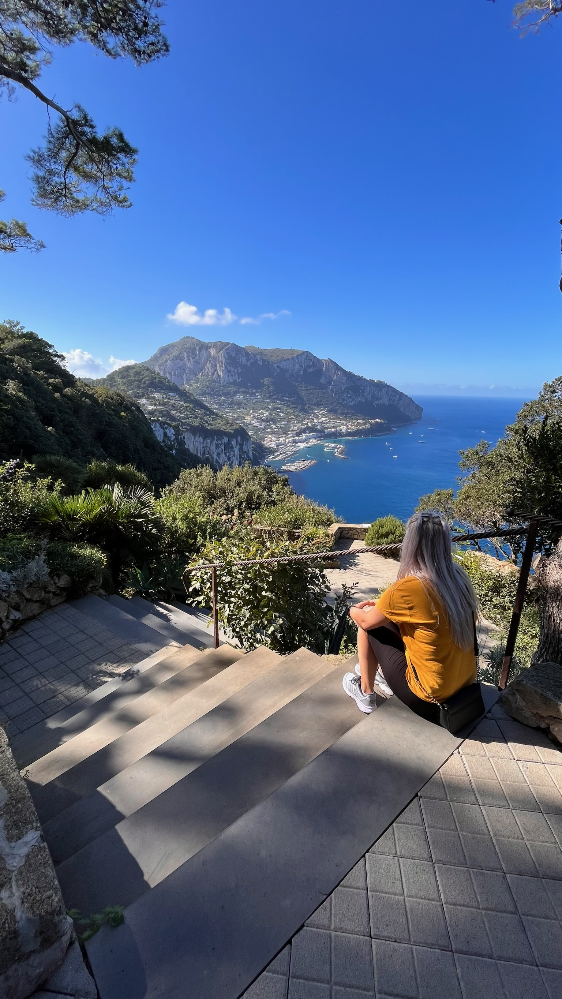
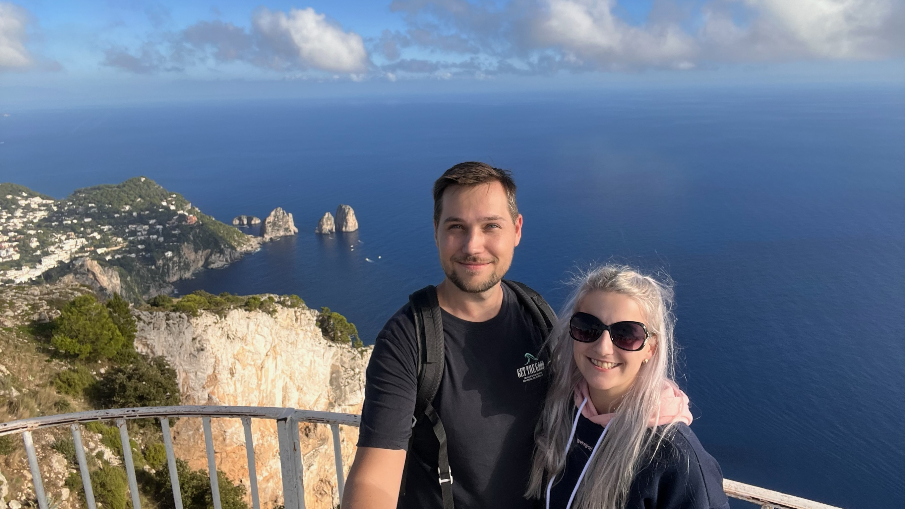
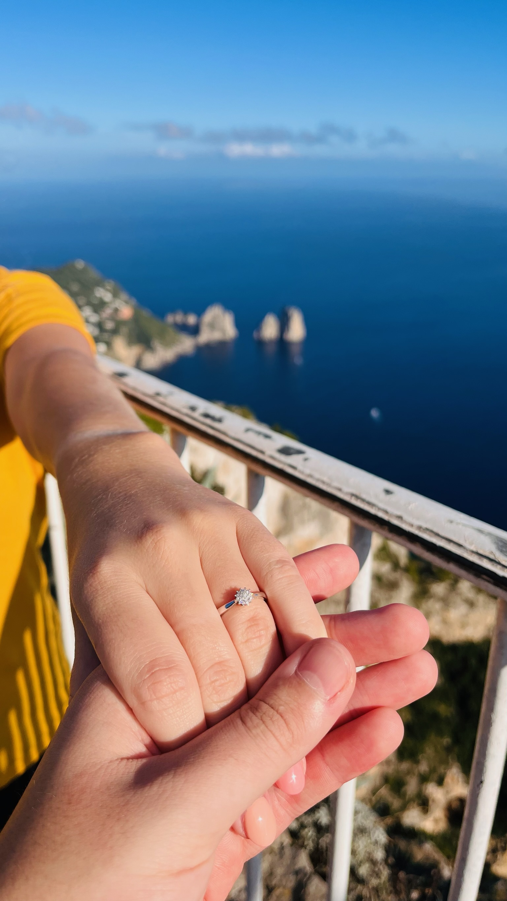
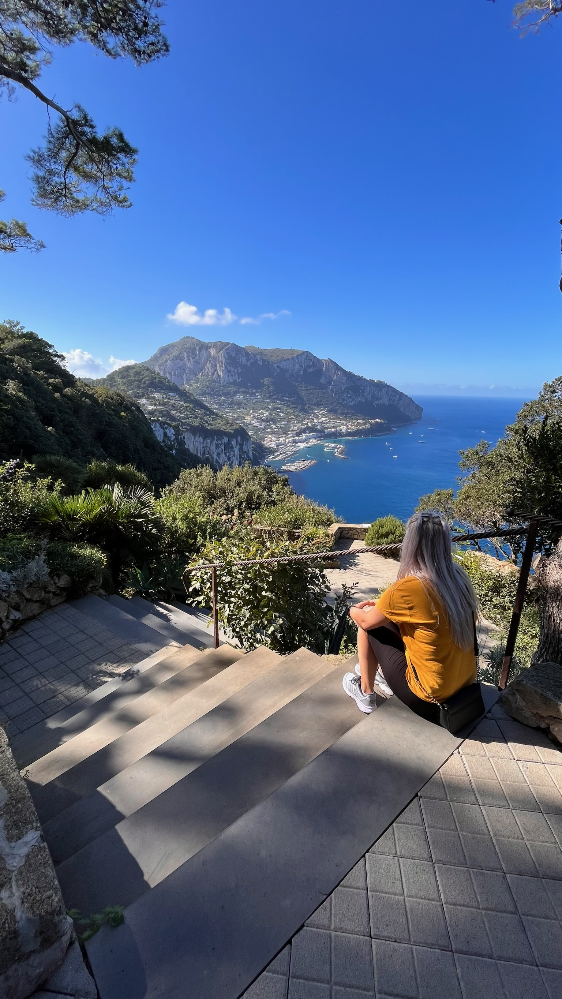
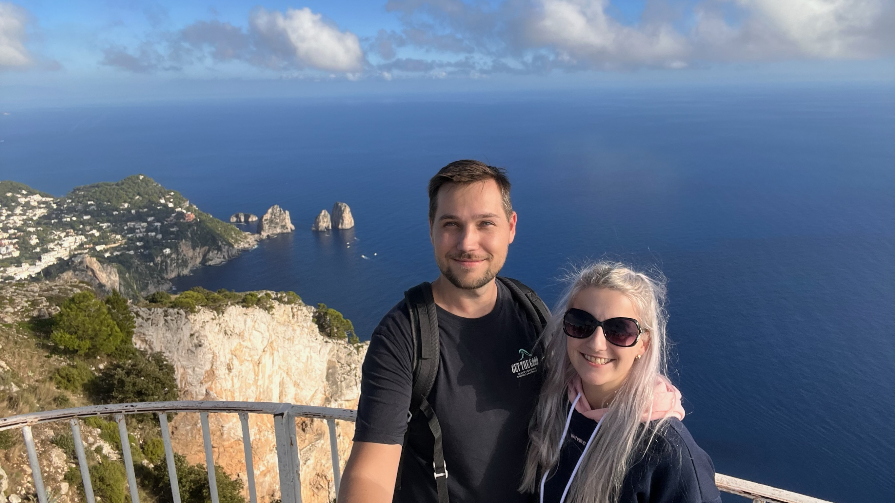
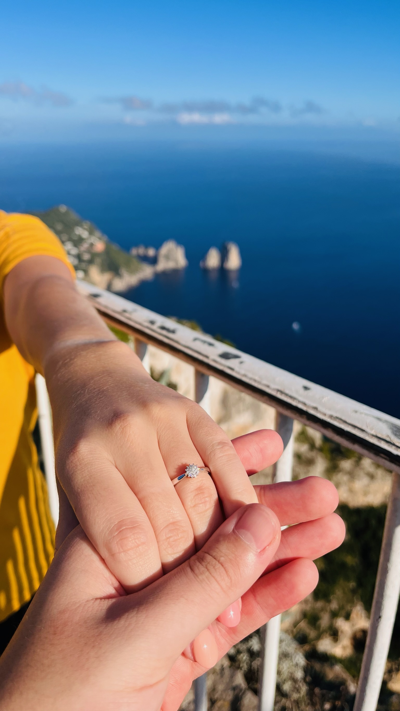

Lucie & Lukáš
Zapište si do diářů
20. 1. 2024


Úplně poprvé se potkali v roce 2018 na brigádě v multikině Cinestar. Luky tam pracoval již několik let. Lůca nastoupila nově, protože ji práce v KFC nebavila. Navzájem na sebe koukali. Hledali příležitosti k vzájemnému setkávání. Prozatím jim tedy štěstí, v tomto směru, nepřálo. Luky si v té době již našel jinou práci, která ho zaměstnala na plný úvazek. Lůca musela zůstat, protože studovala bakalářské studium na technické univerzitě v Liberci obor Rekreologie. Jejich cesty se tímto na pár let rozešly.
Nicméně osud je svedl opět dohromady. Myslím, že se není za co stydět, když vám sdělím, že na sebe narazili náhodou na online seznamce Tinder. I přes několik neúspěchů při hledání partnera, Lůca trpělivě čekala na Lukáše. Luky měl v té době Tinder Premium zdarma a viděl, kdo mu dává lajky. Podle toho se rozhodoval, zda lajk oplatí či nikoliv. Prý to byl tehdy samý děs a fejky. Lůca na něj narazila náhodou a i přes fakt, že tam měl Luky ošklivé fotky, mu dala lajk. No a světe div se, on jí ho opětoval. Tak šli na rande do Coyota.
Luky Lůcu lákal asi dva měsíce na krásný výlet, ale nechtěl prozradit,
kam pojedou. Lůca se ho snažila vyzpovídat několikrát, ale Luky to
udržel v tajnosti. Kam pojedou, Lůce řekl až po cestě na letiště do
Prahy.
🍕 Itálie 🍕 Protože jim v ten den neletěl přímý let na místo určení,
tak letěli nejprve do města Fiumicino poblíž Říma, kam dojeli vlakem
přímo z letiště. Dále je čekala čtyřhodinová cesta autobusem. Po
celodenním cestování, cca v 18 hodin, dorazili do města Sorrento, kde
se ubytovali a hned šli vyzkoušet nějaký ten drink. Večerní atmosféra
v Sorrentu byla ohromující. Tím, že byli ubytovaní v centru města,
zažívali naplno hluk velkoměsta. Během jedné hodiny kolem nich projela
sanitka, hasiči i policie. Všude samé hezké obchůdky, restaurace a
příjemní lidé. Večer si opravdu užili, probrali spoustu témat,
dozvěděli se o sobě něco nového a u toho se ještě napili.
Následující den výletili do města Amalfi. Byly zde nádherné obchůdky, hlavně s místním alkoholickým nápojem „Limoncello“. Ale také si museli nakoupit špunty do uší a deodorant, protože jim ho na letišti sebrali. Už na začátku dne Lůca věděla, že něco „pokadila“. Nevzala si totiž mikinu, tedy většinu dne jí byla zima. Obzvlášť, když téměř celý den pršelo. Museli si koupit pláštěnky, protože by moc daleko nedošli. Stezka bohů byla krásná a zároveň nebezpečná. Byla velmi vysoko položena a všude byl obrovský sráz dolů (nikde nebylo zábradlí). Po cestě potkali pejska, který evidentně hlídal kozy a snažil se ty zběhlice poslat zpět ke stádu. Po celodenním výletě docestovali na zastávku autobusu, který je měl dostat zpět do města Sorrento. Měl jet za 20 minut. Po 20 minutách přijel a rovnou projel, nezastavil. Tak na sebe koukali jako vyorané myši, co se právě stalo... Po hodině měl jet další autobus, který udělal úplně to samé (byly přeplněné). Po dvou hodinách konečně mohli nastoupit a dostali se domů. (brrrrrr zima)
Další den jeli trajektem na ostrov Capri. Byla tam taková krásná lanovka, která by je dostala na místo určení, ale řekli si "fuck it" a šli po schodech (2310 schodů). Ano, Luky byl zpocený i na zadku. Šli do krásných zahrad, kde byl výhled na otevřené moře a průjezdné skály. Říkalo se jim modré laguny, kvůli lomení světla. Poté šli do krásné vily, kde byly obrázky nahých lidí. Funny. Už měli chození víc než dost, tak šli na pizzu a vodu dražší než ta pizza. Busem dojeli do města Anacapri, kde se dostali lanovkou až na vrchol Monte Solano... Vlastně Monte Solaro. Lůca si to prostě nezapamatuje. Opět krásné výhledy na otevřené moře. Šli si udělat několik fotek pod vrcholek. Cestou dolů byla kaplička, ale aby se k ní dostali, museli projít neskutečně ostrým křovím. Chvilku to znělo jako dobrodružný nápad, pak Lůca měla zakrvácené nohy, a tak se na to vysrali.
Postavili se vedle sebe, objali se a hleděli na moře. Lůca chtěla dát Lukymu ruku do kapsy, aby jí ruka nepadala, ale tam bylo obsazeno, měl tam peněženku. Nene, peněženka to nebyla. Něco úplně jiného. Ale to až za chvilinku. Ruka skončila na boku. Oba se kochali výhledem na veškeré krásy ostrova a moře okolo něho. Joo, na takový výhled by si zvykl každý, ten se neokouká. A poté Luky sesbíral všechnu odvahu a poklekl na koleno uprostřed křoví s královsky modrou krabičkou a třpytícím se prstýnkem. Lůcu to tak sebralo, že se jí podlomila kolena. A Luky na to "Prosím vstaň", Lůca opáčila "To nejde". Nakonec vstala a vyslechla Lukyho. A jak vám asi došlo, Lůca řekla ANO!
 






Přepočítávám